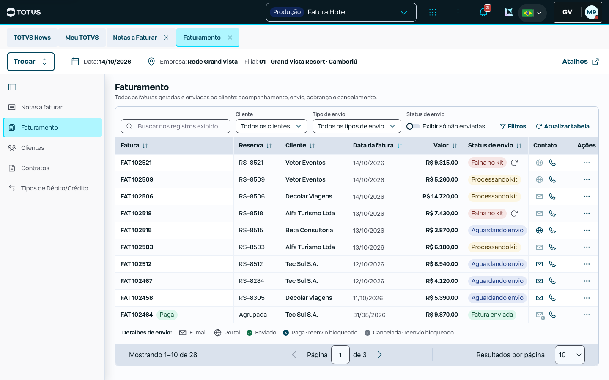
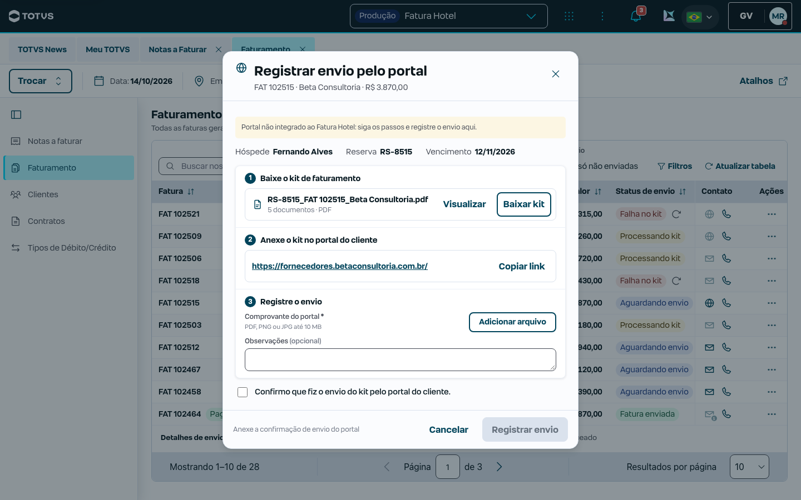
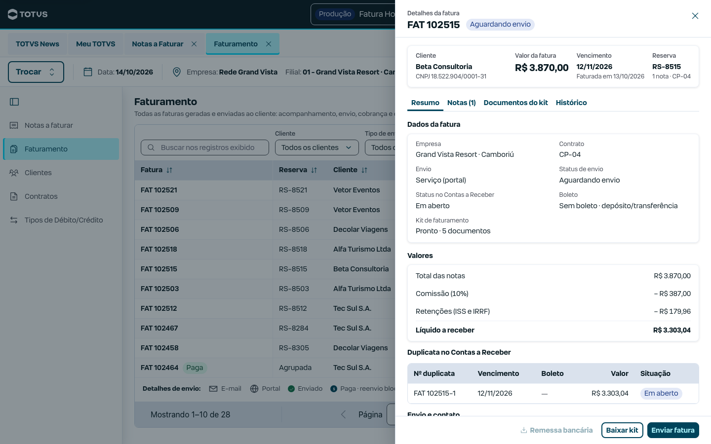
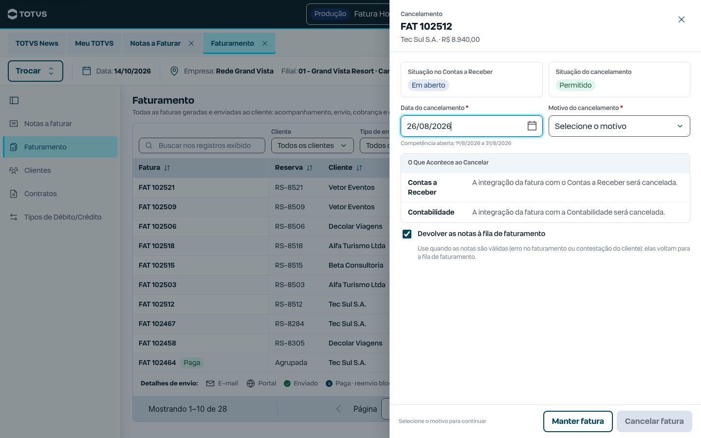

Fatura Hotel: from invoice to delivery, in one screen
A new corporate billing module for hotel chains, designed with the team over three months of weekly reviews. I owned the Billing tab — where invoices are tracked, sent and cancelled — and set up the usability test with clients.

Hotel chains bill corporate clients — travel agencies, event companies, contracted companies — after each stay. Every invoice needs a kit of documents (tax note, folio, voucher) and goes to the client by e-mail or through the client’s own supplier portal. Shared service centers do this for many hotels at once.
TOTVS was rebuilding this module as Fatura Hotel, a SaaS product on its new SmartX platform. The team: a product manager, three product designers, a design lead and the development team. The module was split among the designers — Notes to bill, Billing and Cancellation.
Before drawing screens, we watched a hotel chain’s billing team run their current process in a mirror-room session. What we learned shaped the scope:
People still check every kit
Even with automation, an operator reviews the documents before an invoice goes out — sending the wrong file to a client is the real risk.
One view for all hotels
Teams that serve several hotels want a consolidated view instead of logging in and out of each unit.
E-mail is enough
Automatic e-mail covers the need; other channels like WhatsApp added little value.
A focused pilot
Automating files, invoice generation, bank-slip registration and e-mail came first; cancellation was not essential for the pilot.
The prototype started with two tabs for generated invoices and invoice management. I led their unification and the flows inside it:
01One tab, one status
Generated invoices and invoice management became a single Billing tab with a single status column — the sending status. The job only ends when the invoice reaches the client, so that is what the screen tracks. Cancelling lives in the actions menu.
WHY → two lists with overlapping columns made users look in two places to know whether an invoice was done.
02The list works as a to-do list
Invoices just billed and still to send come first, then unsent ones from previous days, then everything else by date. Status tags say what can be done: “Awaiting delivery”, “Processing kit”, “Kit failed” (with a retry), “Sent”, and “Paid” or “Cancelled”, which block resending.
WHY → the order of the list is the order of the work.

03Honest portal delivery
Client portals aren’t integrated in the MVP, so the system can’t send for the user. I turned it into three guided steps — download the kit, attach it in the client’s portal, register the delivery — and made the proof of delivery (a screenshot or confirmation e-mail) required to register it.
WHY → it keeps an audit trail and avoids invoices marked as sent when they weren’t.


04Everything about an invoice in one panel
Invoice details open in a side panel with Summary, Notes, Kit documents and History, so the list stays in view. Send or resend is the primary action, and items duplicated in the actions menu were removed.
WHY → fewer places to look, and the next step is always the obvious one.


The visual base changed along the way: from SmartX to a Vulpes/Animalia version and back to SmartX. To keep the logic stable through it, we treated flows, labels and states as the source of truth and migrated only the visual layer.
When SmartX lacked a component we needed, I documented the gaps with screenshots and descriptions for the platform team. And once development started, design and code moved in parallel — I tested the implemented flows against the prototype and reported differences.
With the prototype published at a public link, I created the usability test form for clients — covering the Billing and Clients flows — so hotels could test it asynchronously on their own time.

Design the end of the job
Tracking delivery, not just billing, made the screen match how the team measures “done”.
Be honest about what the system does
Saying clearly that the user sends through the portal — and asking for proof — builds more trust than a fake “sent”.
Protect the logic when the UI moves
Platform changes are cheaper when flows and states are agreed first and the visuals follow.